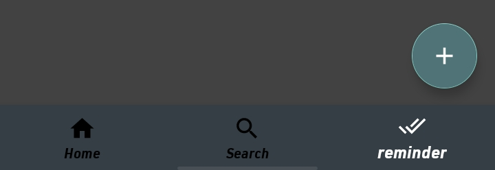
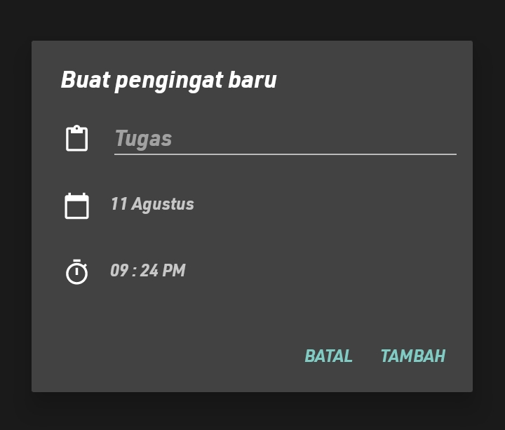
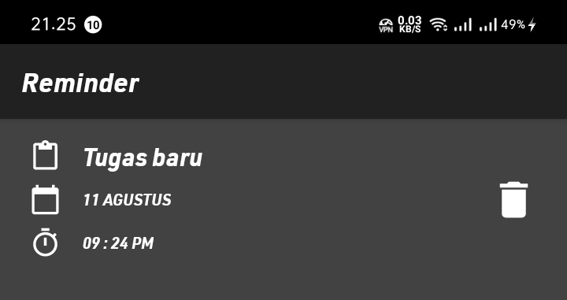
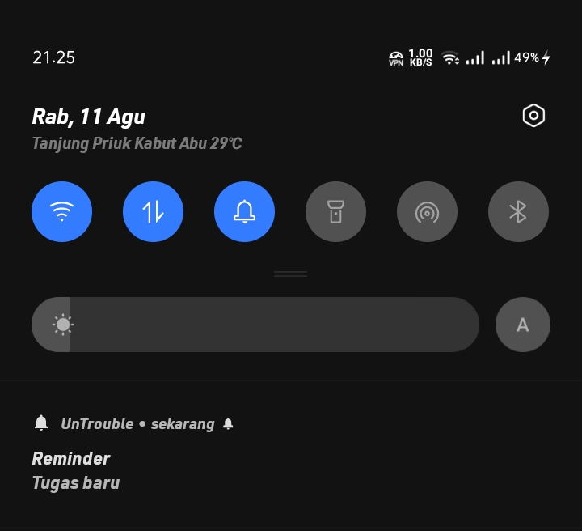

Mengenal navigasi pada aplikasi

Pertama, tekan tanda + yang berada pada bagian bawah kanan layar. Setelah pop-up dialog keluar, masukkan detail pengingat tugas.

Jika sudah selesai mengisi judul tugas, waktu, dan tanggal. langkah selanjutnya adalah menekan tombol "TAMBAH". Notifikasi pengingat tugas akan muncul sesuai waktu yang ditentukan.

Tugas yang ada atau selesai dikerjakan bisa dihapus dengan menekan logo tempat sampah di samping setiap tugas.
Tugas yang telah dimasukkan tidak bisa diedit, sehingga jika terjadi kesalahan, tugas itu harus dihapus dulu sebelum memasukkan tugas yang benar.

Gambar di atas adalah contoh notifikasi yang keluar saat waktu mengerjakan tugas tiba.